Mobara, Chiba: things to do, food and stays
Mobara · Chiba
Mobara
Highlighted on the Chiba map.
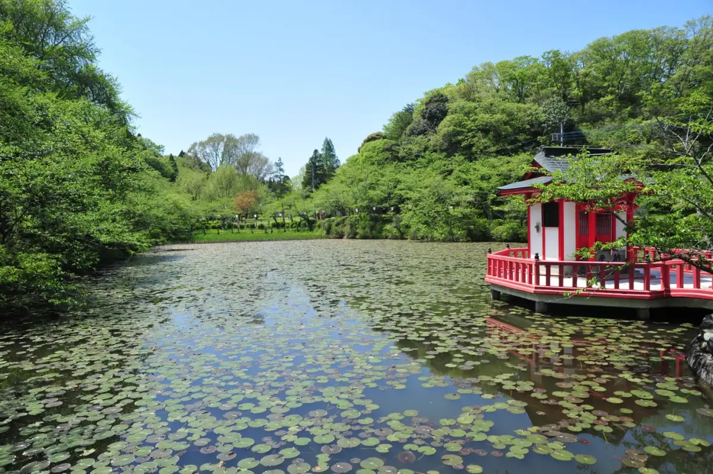
Stay
ホテル 八千代
Hotel Yachiyo
ビジネスホテルセントラル
Business Hotel Sentoraru
Hotel in Takashi, Mobara with business travelers.
ＨＯＴＥＬ ＴＨＥ ＢＥＬＬＥ
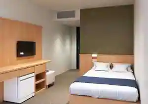
HOTEL THE BELLE
Ruff-Laugh Chiba（ラフラフ千葉）
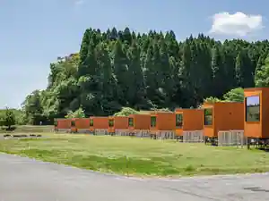
Ruff-Laugh Chiba(Rafurafu Chiba)
HOTEL R9 The Yard 茂原
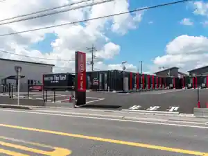
HOTEL R9 The Yard Mobara
HOTEL R9 The Yard 茂原六ツ野
HOTEL R9 The Yard Mobara Roku Tsu No
Dining
とんかつ 串揚げ 優膳
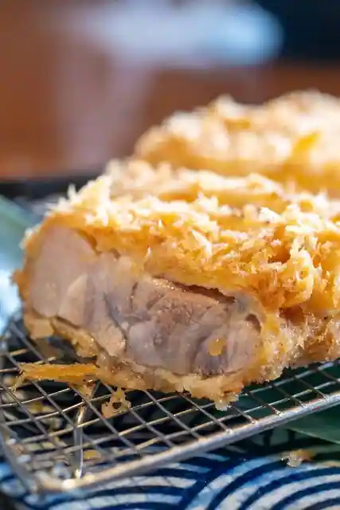
Tonkatsu Kushi Age Yu Zen
中華そば鷸
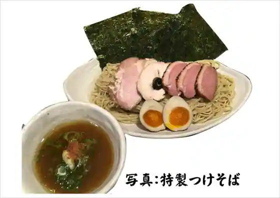
Chuka Soba Shigi
HAPPY DONUT 茂原店
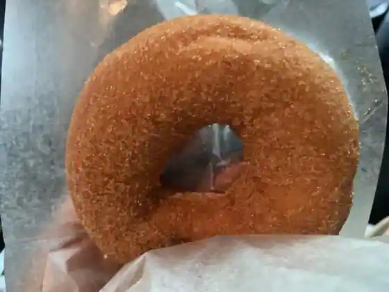
HAPPY DONUT Mobara
焼肉レストラン 太陽 茂原店
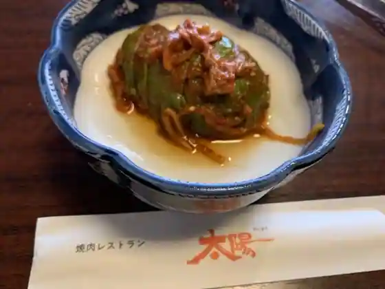
Yakiniku Restaurant Taiyo Mobara
あられちゃん家 千葉工場直売店
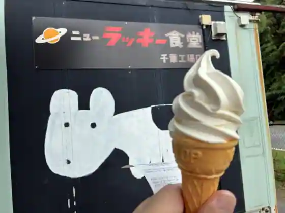
Ararechan Ie Chiba Kojo Chokubai
玉家
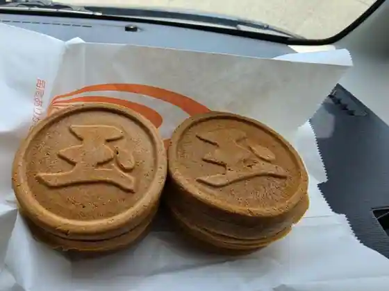
Tama Ie
永田ドライブイン
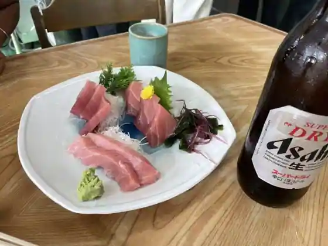
Nagata Doraibuin
らぁ麺 三軒屋
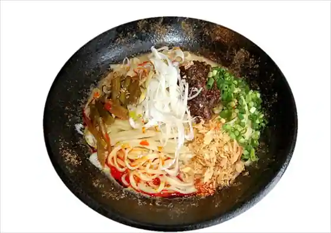
Ra Men Sanken Ya
麺屋 祐
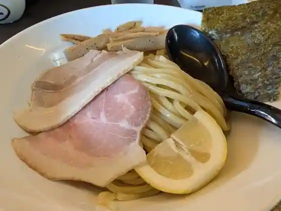
Men Ya Suke
蕎麦奉行
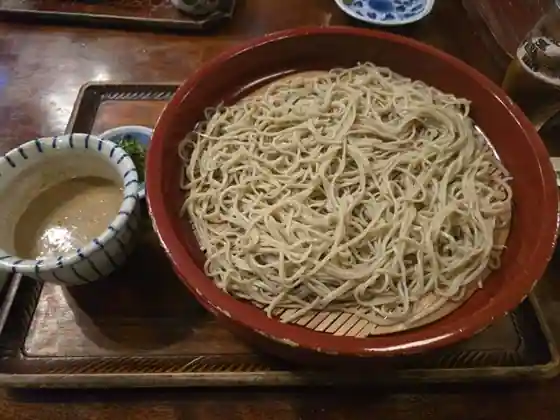
Soba Bugyo
かれーうどん わびすけ
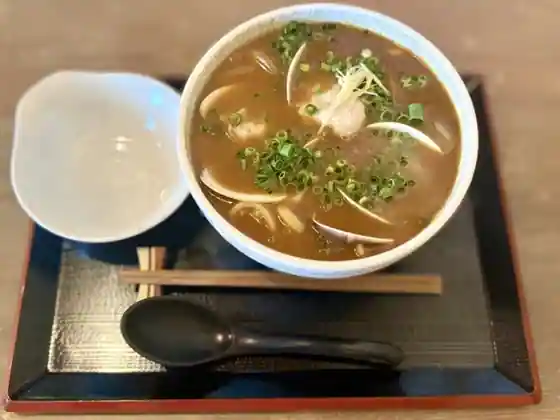
Kareudon Wabisuke
ニューラッキー食堂 千葉工場店
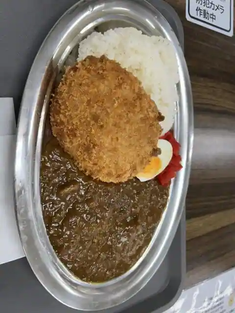
Nyurakki Shokudo Chiba Kojo
蕎麦さとう
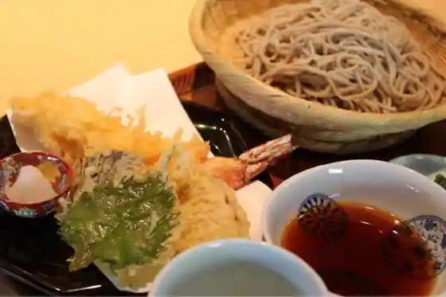
Soba Sato
仲屋たいやき店
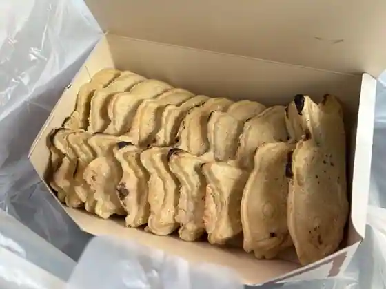
Naka Ya Taiyaki
パティスリー キュイッソン
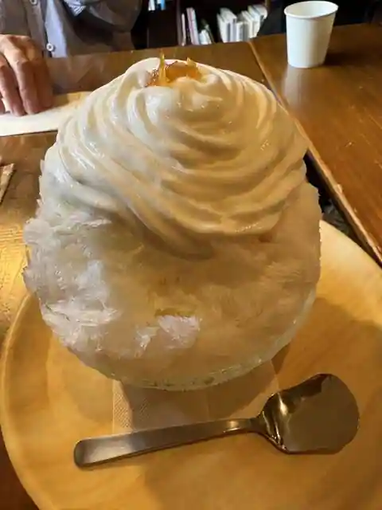
Pateisuri Kyuisson
麺処 らふてる
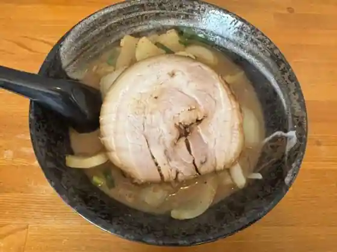
Men Tokoro Rafuteru
くろいちごcafe
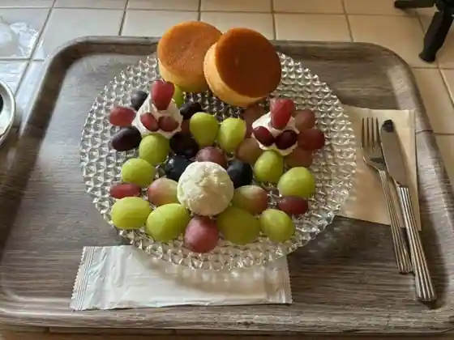
Kuroichigo cafe
もんしち
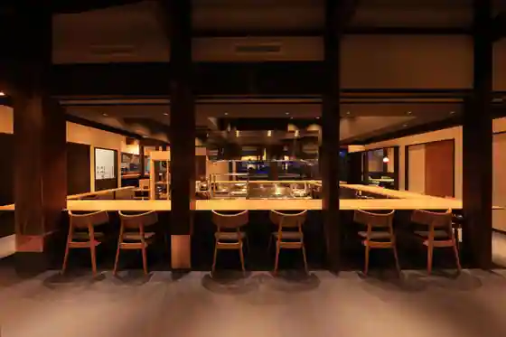
Monshichi
焼肉レストラン井東
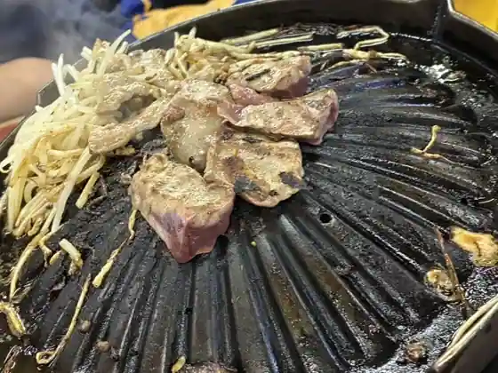
Yakiniku Restaurant Ito
ベリーズカフェ
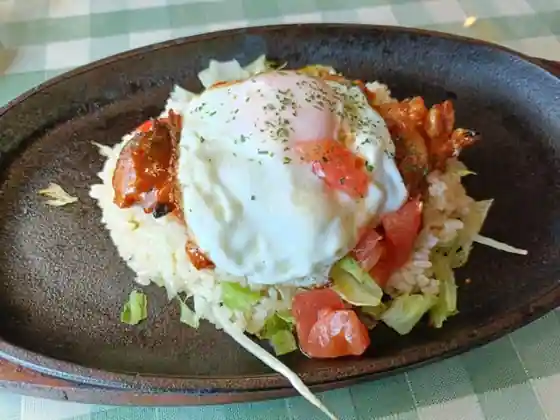
Berizu Cafe
二幸総本店
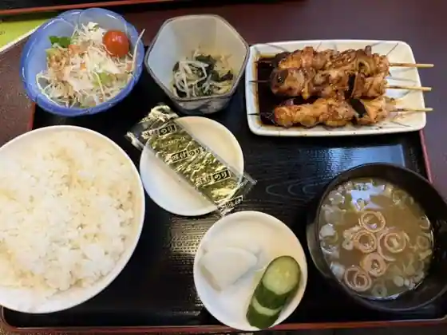
Ni Sachi So Hon
むげん 茂原店
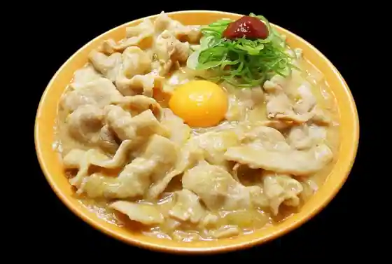
Mugen Mobara
生麺焼きそば まるやま
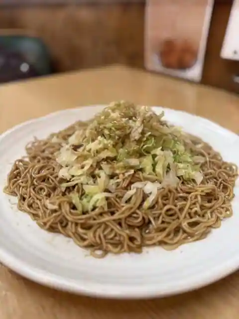
Namamen Yakisoba Maruyama
音威子府食堂
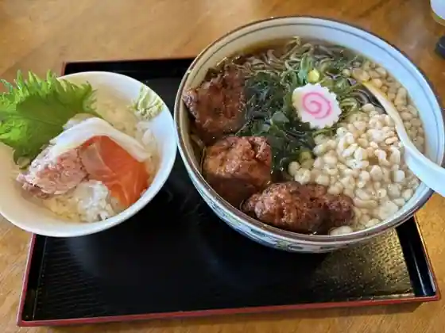
Otoineppu Shokudo
Sights
Mobara Park
Kisetsu no Hana (Ajisai) / Hattori Noen Ajisai Residence
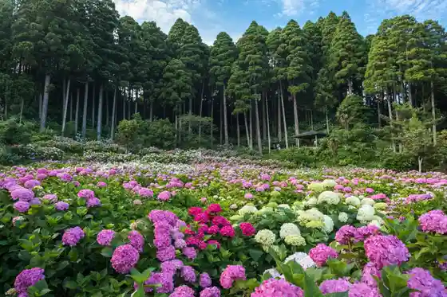
Enoki Town Shopping Street
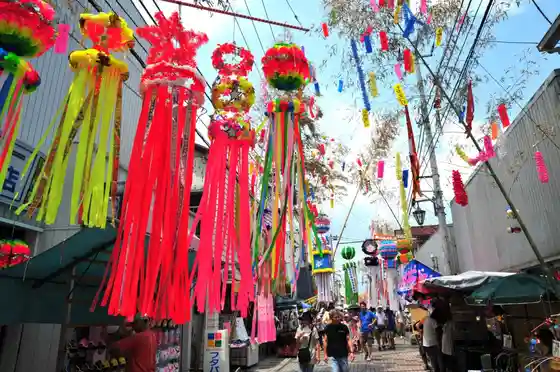
Nosambutsu Chokubai Tokoro Jun no Sato Negibozu
Higashi Minobu Honzan Mo Hara Tera
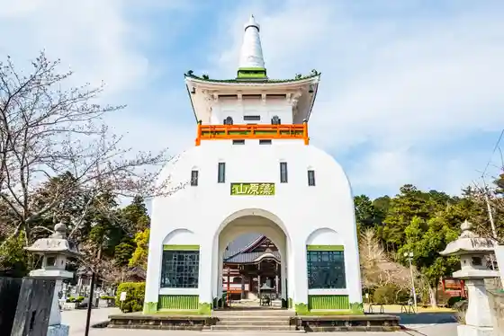
Kitsuju Shrine
Kisetsu no Hana (Botan) / Mobara Botan Sono
Mobara Ritsu Art Museum Local History Museum
JA Chosei Nagaiki Market